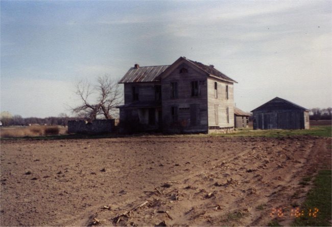

Abandoned House

An abandoned house on Route 6 just outside Helena is supposedly haunted by the ghosts of a family that was slaughtered there. The husband is reputed to have murdered his family, hung them in the barn, and then committed suicide.
Unfortunately, this house has been razed. Perhaps the ghosts still roam the area.
Back